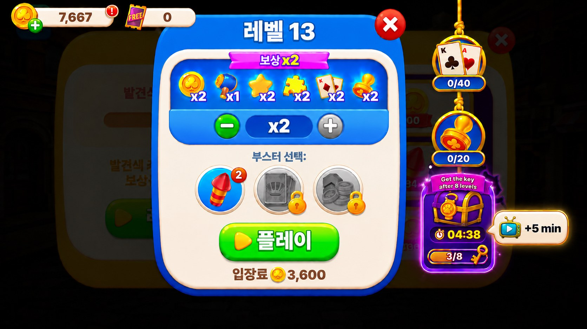

유저 이벤트 플로우 (순환)
판수·시간·쿨다운 등은 전부 event_shadow_sprint 시트 변수 — 아래 수치는 예시값이며 변수명 병기.
flowchart TD A["이벤트 기간
월 0:00 ~ 금 0:00 (= 월~목 4일) · 매주 반복 (event_schedule 1행)
판정 주체(클라/서버) 미정 — 개발 확인 ③"] --> P["판 종료 → 로비 복귀
우선순위 팝업 먼저 소화: 보상 정산·마일스톤·출석 등"] P --> Q{"발동 조건?
기간 내 · 쿨다운 경과 · 미진행 중"} Q -- "충족" --> SC{"팝업 세션 상한 여유?
앞 팝업 소화로 상한 소진 여부"} SC -- "여유 있음" --> C["발동 시퀀스 연출 자동 재생 + 타이머 시작
발견 → 열쇠 강탈 → 도주 → 버튼 🐾마킹 (입력 잠금·사이클당 1회)
duration_sec=1500 (예: 25분)"] SC -- "상한 소진" --> DEF(["다음 로비 복귀로 이월
사이클 유실 아님 · 쿨다운 타이머 미시작 · 큐에 보류"]) DEF --> P Q -- "미충족" --> P2(["비노출
쿨다운 중이거나 기간 밖 — 다음 로비 복귀 시 재평가"]) C --> ST["진행 중 상태 표시
프리레벨 행잉 태그(체스트·타이머·n/8 게이지+열쇠 골 마커·실루엣 귀+발) · 플레이 버튼 🐾마킹 두 가지뿐(인게임 표시 없음)"] ST --> D["플레이 반복
타이머·n/8 인지는 매판 사이 프리레벨 행잉 태그에서"] D --> E{"타이머 내 완주?
total_rounds=8 (예: 8판)"} E -- "✅ 성공 = 열쇠 획득" --> F["체스트 보상 — 결과 화면 체스트 블록
신규 팝업 없음 · 지급 연출은 결과 화면 안 3컷
8판째 결과 화면 하단에 체스트 블록 [받기]
일반 판 보상 RV ×2는 기존 그대로 유지"] E -- "⛔ 잔여 5분 이하 · 미완주" --> RV(["RV 타이머 +5분 연장 (드롭 가능)
타이머 옆 말풍선 [+5 min] · ad_extend_sec=300
사이클당 1회 · 미시청 시 그대로 만료"]) RV --> D E -- "⛔ 시간 초과" --> H["실패 — 신규 연출·알림 없음
행잉 태그·버튼 마킹 비노출 전환만 · 몰수 없음
체스트만 다음 기회"] F --> CD["사이클 종료 → 쿨다운
cooldown_sec=43200 (예: 12h) 경과 후 재트리거 대기"] H --> CD CD --> J(["↺ 기간 내 반복 · 주간 반복
기간 내·쿨다운 경과·미진행이면 다음 로비 복귀 시 재발동"]) classDef default fill:#f4f6fb,stroke:#aab4c8,color:#22283a; classDef good fill:#e6f7ec,stroke:#2fa96b,color:#124a2d; classDef bad fill:#fdecec,stroke:#e06666,color:#6e1f1f; classDef auto fill:#efe9fc,stroke:#8b6ae0,color:#3a2b6e; classDef hook fill:#fff4d9,stroke:#d9a520,color:#6e5410; class F good; class H bad; class C,ST auto; class E,Q,SC,RV hook; class CD,P2,DEF default;
노출 시기 — 로비 팝업 시퀀서 정합
| 시점 | 노출 | 티어·모드 |
|---|---|---|
| 레벨10 클리어 | 이벤트 해금(unlock 50031) — 별도 튜토리얼 없음. 첫 발동 연출과 인포 팝업(ⓘ)이 안내 역할 | 해금 조건 |
| 기간 내 · 쿨다운 경과 · 미진행 · 로비 복귀 시 우선 팝업 소화 후 | 발동 시퀀스 연출 자동 재생 + 타이머 시작 — 유저의 최초 인식(사이클당 1회·기존 팝업 체인 마지막 순번) | 기존 팝업 체인 마지막 순번 |
| 8판 완주 | 체스트 보상을 8판째 결과 화면 하단 체스트 블록에 표시(신규 팝업 없음 · 지급 연출은 결과 화면 내 3컷) · 기여 항목 🐾마킹 · 일반 판 보상 RV ×2는 기존 그대로 유지 | 결과 화면 블록 추가(신규 모달 없음) |
| 잔여 5분 이하 · 미완주 | 행잉 태그 타이머 옆에 말풍선 [+5 min] 노출(TV 아이콘) — 시청 완료 시 ad_extend_sec만큼 타이머 연장(사이클당 1회) | 행잉 태그 내 말풍선(신규 모달 없음) · 드롭 가능 |
| 타이머 만료(실패) | 노출 없음 — 행잉 태그·플레이 버튼 마킹 비노출 전환만. 별도 알림·토스트 없음 | 비노출 전환(팝업 체인 무관) |
| 언락 인트로와 발동 조건 동시 충족 | 언락 인트로 먼저 → 발동 연출은 다음 로비 복귀 시(같은 진입 2모달 금지) | 엣지 규칙 |
| 팝업 세션 상한 소진 | 발동 연출을 다음 로비 복귀로 이월 — 큐에 보류 상태로 유지. 사이클 유실 아님·쿨다운 타이머 미시작·5440은 재발화하지 않음(중복 계상 방지) | 엣지 규칙 — 개발 필수 |
5441가 안 찍히고 사이클이 통째로 유실됨. 이월 중에는 쿨다운 타이머를 시작하지 않으며, 이벤트 기간을 벗어나면 보류분을 폐기함.cooldown_sec 경과 시 재트리거. 로비 팝업 순서 상세 = 아래 핸드오프 문서.로비 복귀 팝업 순서 (현행 체인 · 발동 연출은 마지막 순번)
| 순번 | 팝업 |
|---|---|
| 0 | 보상 획득 애니메이션 |
| 1 | 마일스톤 보상 |
| 2 | 도시 완성 보상 |
| 3 | 로그인 프롬프트 |
| 4 | 특별 오퍼 |
| 5 | 강제 꾸미기 |
| 6 | 출석(데일리) |
| 7 | 로비 튜토 가이드 · 이벤트 마일스톤 팝업 |
| 8 | 망치 준비 가이드 |
| 9 | 그림자 냥이 추격전 발동 연출 — 위 팝업 전부 소화 후 재생(사이클당 1회) · 세션 상한 소진 시 잘라내지 말고 다음 로비 복귀로 이월 |
정의
스프린트 목표 8판은 NRU가 하루에 걸쳐 치는 판수와 같은 양임. 이를 25분 창에 압축해 그날 판수를 2배 이상 끌어올리는 구조임. 실패해도 몰수 없음이라 다운사이드 없음. 발동 시퀀스(체스트 발견→열쇠 강탈→도주→마킹→행잉태그)는 원본 CCS "Catch the Troll"을 간소화 이식함.
이벤트 규칙
2층 구조. 레이어1 여정 트랙(시즌 상시·cross-slot 누적) + 레이어2 그림자 냥이 추격전(본 스펙 · 단발 창).
| 구분 | 레이어1 · 여정 트랙 | 레이어2 · 그림자 냥이 추격전 (본 스펙) |
|---|---|---|
| 지속 | 시즌 상시 (cross-slot 누적) | 유저별 사이클 (기간 월~목 · 쿨다운 12h · 회당 25분) |
| 진행 통화 | 스프린트 사이클 (성공 1회 = 진척 +1) | 판수 카운터 (창 안 클리어 판수) |
| 목표 | 6마일스톤 · 스프린트 사이클 누적 | 25분 안 8판 → 열쇠 → 루나 체스트 |
| 보상 | M2·M4·M6 해머 2씩(총 6)+와일드·골드300·undo2 · 6완주 → Jackpot 해금 | Normal 6슬롯(골드·해머·와일드카드·되돌리기·파이어웍스·무료 입장 티켓) / Jackpot 6슬롯(+데코 조각 — 부록·v1 OFF). 수량은 event_shadow_chest 시트 |
| 실패 | 체스트만 무보상 · 사이클 종료 · 12h 쿨다운 | 몰수 없음 · 체스트(열쇠)만 미획득 |
| KPI | 완주율 · D1/D2 리텐션 | 판수/유저-일 · 세션 몰입 |
1-1 발동 시퀀스 — 8단계
원본 CCS "Catch the Troll" 발동 흐름을 GIF·스크린샷 6장으로 프레임별 참고함. 각 단계는 원본 서술 → 루나 이식안 병기. 핵심 심리 = 보상을 먼저 '내 것'으로 보여주고(소유 효과) → 뺏기고 → 되찾으러 뛰게(손실회피). 기간 내·쿨다운 경과·로비 복귀 시 자동 발동, 시퀀스 종료 시점부터 25분 타이머 시작.
레퍼런스 시퀀스는 간소화하여 진행함. 완전 재현 아님. 핵심 연출 4종(①발견 ②열쇠 강탈 ③도주 ④밧줄 태그) · 자국·스프라이트 중심. 스플래시·파티클·도주 경로 등 세부 연출은 아트 재량으로 대폭 축소 가능.
그림자 냥이가 열쇠를 훔쳐 달아나는 캐릭터 풀 애니메이션은 제작하지 않음. 단순화하여 진행함. 캐릭터 본체 끝까지 미등장 — 고양이 발톱 자국·발바닥 자국으로 표현 — ①강탈=화면 밖에서 앞발이 슥 들어와 열쇠 채감+발톱 긁힘 이펙트 ②도주=발바닥 자국 트레일이 로비를 가로질러 점점이 찍히며 열쇠 아이콘 이동 ③마킹=플레이 버튼 발바닥 자국 1개 ④실패=자국이 화면 밖으로 사라지며 열쇠 페이드아웃.

① 체스트 발견
📎 원본 (CCS) — 진행 순서- 1이벤트 시작 → 로비에 풀스크린 등장
- 2헤드라인 "Congratulations! You found a Legendary Chest"
- 3Chest rewards 패널에 코인 7,850 + 부스터 6종 미리 공개
- 4하단 "Tap to Collect" — 유저가 보상을 '내 것'으로 인식
- 화면로비 풀스크린
- 카피"그림자 냥이가 열쇠를 물고 도망쳤어요! 25분 안에 8판을 깨고 따라잡아요"
- 보상 공개Normal 6슬롯 = 골드 · 해머 · 와일드카드 · 되돌리기 · 파이어웍스 · 무료 입장 티켓
Jackpot 6슬롯(+데코 조각)은 부록 · v1 OFF · 수량은event_shadow_chest시트 - 루나안내·응원 역할로 등장
- 입력 잠금풀스크린 터치 가드 — 최초 1회 필수 시청 후 [Ok] 노출 · 재노출부터 탭 스킵 허용


② 열쇠 강탈 (Grab)
📎 원본 (CCS) — 진행 순서- 1화면 밖에서 핑크 젤리 촉수가 들어옴
- 2체스트의 황금 열쇠를 낚아챔
- 3핑크 스플래시 이펙트
- 4보상 패널은 계속 노출 — 잃을 것을 보게 함
- 동작화면 밖에서 고양이 앞발이 슥 들어와 열쇠를 채감
- 이펙트🐾발톱 긁힘
- 제약캐릭터 본체 미등장 (발만 노출)
- 상태
GRAB - 입력연출 중 잠금


③ 스토리 팝업
📎 원본 (CCS) — 진행 순서- 1트롤 아이콘 표시
- 2"Oh no! Bubblegum Troll stole the chest key. Quick, we have to catch him!"
- 3[Ok] 버튼
- 4보상 패널은 계속 노출된 채 = 잃을 것을 보며 읽음
- 아이콘루나
- 카피"그림자 냥이가 열쇠를 물고 도망쳤어요! 같이 잡아요!"
- 버튼[확인] 단일 — 별도 [참가] 버튼 없음 (InfoPopup의 [Ok]와 동일)
- 보상 패널계속 노출 유지 (손실회피 강화)


④ 도주 (Escape)
📎 원본 (CCS) — 진행 순서- 1[Ok] 후 로비 복귀
- 2트롤이 열쇠를 들고 메타 맵을 가로질러 날아 달아남
- 3이동 경로에 핑크 젤리 자국을 남김
- 4도주 경로의 종착 = 플레이(레벨) 버튼
- 트레일🐾발바닥 자국이 로비를 가로질러 점점이 찍힘
- 열쇠자국을 따라 열쇠 아이콘이 이동
- 제약캐릭터 이동 애니 없음 (자국+아이콘만)
- 종착플레이 버튼
- 상태
ESCAPE· 연출 중 입력 잠금


⑤ 플레이 버튼 마킹
📎 원본 (CCS) — 진행 순서- 1트롤이 플레이 버튼(LEVEL)에 젤리를 묻히고 사라짐
- 2이벤트 진행중 상시 표시가 플레이 버튼 자체에 생김
- 3입장 동선에 직접 마킹 = 다음 행동 유도
- 마킹플레이 버튼에 🐾발바닥 자국 1개 상시 표시
- 상태
RUNNING - 역할스프린트 진행 중 로비 진입점
- 제외인게임 HUD·타이머 위젯 없음 — 타이머·n/8 인지는 프리레벨 행잉 태그에서만


⑥ 프리레벨 밧줄 태그
📎 원본 (CCS) — 구성 요소- 1프리레벨 팝업 우측 밧줄에 행잉 태그
- 2체스트 아이콘
- 3남은시간 (26m 15s)
- 4진행바 "Get the key after 8 levels"
- 문법프리레벨 팝업 우측 기존 진행 이벤트 밧줄 재활용
- 구성체스트 + 남은시간 + "8판 완주 시 열쇠 획득" 진행바
- 보상 표기Normal 6슬롯 = 골드 · 해머 · 와일드카드 · 되돌리기 · 파이어웍스 · 무료 입장 티켓
Jackpot 6슬롯(+데코 조각)은 부록 · v1 OFF · 수량은event_shadow_chest시트 - 실루엣태그 위 그림자 냥이 상주 — 귀 끝 + 열쇠 든 발만 태그 밖으로 노출 (정체 미공개)
- 소멸스프린트 진행 중 상시 · 실패 시 열쇠와 함께 사라짐
- 미표시배수 배지 (티어 차이 = 체스트 보상 내용만)


⑦ 체스트 보상 — 8판째 결과 화면 하단 블록 (3컷 연출)
신규 팝업·모달은 만들지 않음 — 지급 연출은 기존 결과 화면 안에서 3컷으로 처리함. (연출 자체는 신규 제작분임 — 아래 3컷이 아트 작업 대상)
🎬 3컷 연출 — 진행 순서- 1행잉 태그 게이지 8/8 만충 · 글로우
- 2태그의 체스트가 팝 하고 열림 → 🐾파티클이 보상 아이콘으로 날아감
골드 · 해머 · 와일드카드 · 되돌리기 · 파이어웍스 · 무료 입장 티켓 (수량 =event_shadow_chest시트) - 3태그 소멸 · 체스트 블록에 🐾마킹 완착
→ 태그가 보상으로 변환되며 사라지는 인과를 시각화하는 것이 이 연출의 목적임.
- 구현 위치결과 화면(
PopupCompleteLevel)에 하단 블록 추가 - 무변경기존 보상 리스트 · RV ×2 로직
- 신규 제작태그 소멸 Tween + 🐾파티클 + 체스트 블록 뱃지 오버레이
- 실패 시이 연출 없이 태그 비노출 전환

⑧ 잔여 5분 이하 — 타이머 말풍선 [+5 min]
🎬 진행 순서- 1잔여 시간 ≤
ad_extend_threshold_sec(예 300초) AND 미완주 - 2행잉 태그의 타이머 옆에 말풍선 노출 — 꼬리가 타이머를 가리킴
구성 = 작은 TV 아이콘(RV 관용 표기) + "+5 min" · 크림 바탕 + 금색 테두리 - 3시청 완료 →
ad_extend_sec(예 300초)만큼 개인 타이머 연장 - 4사이클당 1회만 허용 (서버 검증)
- 5미시청 시 그대로 만료 — 패널티 없음
본 기능은 스프린트 성립에 필수가 아님 — 빠져도 이벤트는 그대로 동작함(잔여 시간 만료 = 실패, 기존 흐름 유지). 서버 타이머 연장 검증·RV 지면 연동·중복 방지가 예상보다 붙으면 v1에서 제외하고 2차로 미뤄도 무방함.
빼는 경우 처리 =
ad_extend_max_per_cycle=0으로 시트에서 OFF(코드 롤백 불필요) · 말풍선 미노출 · 5447 미발화 · 5443/5444의 extended는 항상 FALSE. 판단은 개발 견적 기준으로 개발팀에 위임함.- UI행잉 태그 컴포넌트에 조건부 말풍선 1개 추가 (신규 모달 없음)
- 디자인크림 말풍선 + 꼬리가 타이머를 지시 · 안에 틸 TV 아이콘 + "+5 min"
태그 본체(보라·금)와 색을 분리해 별개 액션으로 읽히게 함 · 무게는 [플레이] 버튼보다 가볍게 - RV기존 RV 지면 문법 재활용
- 연출없음 — 타이머 숫자가 튀며 갱신되는 정도
- 계측
5447로 노출·시청·연장 결과

※ 목업의 "+5 min"은 영문 표기 예시임 — 한국어 빌드 문구는 T_SHADOW_CHASE_AD_EXTEND = "+5분".
인포 팝업 — 이벤트 안내 (ⓘ 버튼)
진입 — 프리레벨 행잉 태그 · 결과 화면 행잉 상자의 ⓘ 버튼 탭 시 표시. 발동 연출(최초 1회 시청) 이후 규칙을 다시 확인하는 수단임.
🎬 팝업 구성 순서- 1서사 — 실루엣 + 열쇠
- 2목표 — 체스트 + "8판이면 열쇠를 되찾아요"
- 3체스트 보상 6슬롯 미리보기
골드 · 해머 · 와일드카드 · 되돌리기 · 파이어웍스 · 무료 입장 티켓 (수량 =event_shadow_chest시트) - 4남은 시간
- 5[X] 닫기
- 클래스신규 팝업 1종 —
PopupEventShadowChase(PopupBase 문법) - 데이터보상 패널 수치는
event_shadow_chest시트 연동 (하드코딩 금지)

발동 시퀀스 연출·플로우 명세
| 단계 | 연출 | 구현 |
|---|---|---|
| ① 발견 | 루나 체스트 풀스크린 등장 + 체스트 보상 전체 미리 공개 (Normal 6슬롯(골드·해머·와일드카드·되돌리기·파이어웍스·무료 입장 티켓) / Jackpot 6슬롯(+데코 조각 — 부록·v1 OFF). 수량은 event_shadow_chest 시트 | 신규 연출 |
| ② 열쇠 강탈 | 화면 밖에서 고양이 앞발이 슥 들어와 열쇠를 채감 + 🐾발톱 긁힘 이펙트 (캐릭터 본체 미등장) | 자국 스프라이트 + Tween |
| ③ 안내 | 루나 아이콘 + "그림자 냥이가 열쇠를 물고 도망쳤어요! 같이 잡아요!" + [확인] | 팝업 문법 재활용 |
| ④ 도주 | 🐾발바닥 자국 트레일이 로비를 가로질러 점점이 찍히며 열쇠 아이콘 이동 → 플레이 버튼 종착 (캐릭터 이동 애니 없음) | 자국 스프라이트 + Tween |
| ⑤ 마킹 | 플레이 버튼에 🐾발바닥 자국 1개 (진행 중 상시 표시) | 버튼 오버레이 |
| ⑥ 행잉 태그 | 프리레벨 밧줄에 체스트+남은시간+진행바(n/8) · 체스트 보상 표기 | 기존 진행이벤트 밧줄 재활용 |
| ⑦ 지급 | 결과 화면 하단 체스트 블록에 지급 + "🐱 그림자 냥이 추격전" 뱃지 · 상단 판 보상(RV ×2)은 무변경 | 결과 화면 하단 블록 추가 |
| ⑧ 타이머 연장 | 잔여 5분 이하·미완주 시 타이머 옆 말풍선 [+5 min](TV 아이콘·크림 바탕) — 연출 제작분 없음(타이머 숫자 갱신) | 행잉 태그 조건부 말풍선 + 기존 RV 지면 |
연출 상태 명세 (5상태)
클라 연출 상태 enum(제안: ShadowChaseFx)과 아트 대응. 전 상태 🐾자국 표현 기준(캐릭터 본체 미등장).
| 상태 | 클라 상태값 | 발동 시점 | 연출 |
|---|---|---|---|
| 열쇠 강탈 | GRAB | 발동 시퀀스 ② (flow-02 참고) | 앞발+발톱 긁힘 이펙트로 열쇠 채감 |
| 도주 | ESCAPE | 발동 시퀀스 ④ (flow-04 참고) · 시간 초과 시 재사용 | 발바닥 자국 트레일 + 열쇠 아이콘 이동 |
| 포획 성공 | WIN | 8판 완주 | 신규 팝업 없음 — 결과 화면 안에서 3컷 연출(태그 만충 → 체스트 오픈·파티클 → 태그 소멸·🐾마킹) |
| 시간 초과 | LOSE | 타이머 만료 | 신규 연출·알림 없음 — 행잉 태그·로비 아이콘·버튼 마킹 비노출 처리(몰수 없음) |
| 진행 중 | RUNNING | 진행 중 상시 | 플레이 버튼 🐾마킹 · 프리레벨 행잉 태그 (flow-05·06 참고) — 인게임 HUD 없음 · 잔여 5분 이하 시 타이머 말풍선 [+5 min] 노출 |
RUNNING의 조건부 UI임. enum은 5종 유지.아래 3종이 개발/QA에 그대로 넘어가는 문서임. 본 기획서가 원본(SSOT)이며, 세 문서는 여기서 각 담당이 볼 부분만 추출한 것임 — 내용이 어긋나면 본 기획서가 우선.
| 문서 | 대상 | 내용 |
|---|---|---|
📄 개발 체크리스트handoff-shadow-chase-dev.md |
클라 · 서버 | 발동·사이클(이월 규칙 포함) · 판수 카운트 규칙 · 연출·입력 잠금 · 진행 중 표시 · 성공/실패 처리 · 타이머 연장(드롭 가능) · 데이터·코드 등록 · 킬스위치·운영 · 로그 5440~5447 · 개발 확인 4건 |
🧪 QA 테스트 케이스handoff-shadow-chase-qa.md |
QA | 14개 영역 · 우선순위(🔴필수/🟡중요/⚪확인) 표기 · 해금·발동·팝업 체인·연출·판수 카운트·결과 화면·실패·연장·타이머 권위·기간 경계·킬스위치·로그·회귀·릴리즈 게이트 |
🪟 로비 팝업 시퀀서handoff-lobby-popup-seq.md |
클라 (공통 인프라) | P0~P6 우선순위 티어 · 큐/억제 모델 · 세션 상한 · 발동 연출 이월 규칙 · AS-IS 코드 매핑 · lobby_popup 시트 스키마 · 마이그레이션 7단계 · 엣지케이스 |
※ QA용으로 시트 값(duration_sec·total_rounds·cooldown_sec)을 줄여 회전시킨 뒤 원복하는 절차가 QA 문서에 포함돼 있음.
3-1 밸런스 파라미터
SSOT = 라이브 시트([PST] 밸런스시트) 형식의 이벤트 전용 탭. 값은 전부 예시값(초안) — 시트에서 빌드 없이 튜닝.
event_shadow_sprint 탭 (240001 · 튜닝 코어 1행)
| 변수명 | 타입 | 단위 | 예시값 | 설명 |
|---|---|---|---|---|
duration_sec | int | 초 | 1500 | 스프린트 시간창 (예: 25분) · 판당 소요 실측 후 조정 — 레벨 구간별 분산 확인 필수(아래 주의) |
total_rounds | int | 판 | 8 | 완주 목표 판수 (= 열쇠·체스트 조건) |
cooldown_sec | int | 초 | 43200 | 사이클 종료(성공/실패) 후 재트리거 대기 — 예 12h = 일 최대 2사이클 자연 상한 |
grace_after_window | bool | — | TRUE | 기간 종료 시각을 넘겨도 진행 중 유저는 개인 타이머 종료까지 완주 인정 (의도된 설계 — 아래 방어 문구) |
ad_extend_threshold_sec | int | 초 | 300 | 신규 — 잔여 시간이 이 값 이하일 때 타이머 말풍선 [+5 min] 노출 |
ad_extend_sec | int | 초 | 300 | 신규 — RV 시청 완료 시 연장되는 시간 |
ad_extend_max_per_cycle | int | 회 | 1 | 신규 — 사이클당 연장 허용 횟수 (0 = 기능 OFF · 킬스위치 겸 v1 드롭 시 처리) |
in_use | bool | — | FALSE→TRUE | 킬스위치 겸용 (선등록 FALSE·라이브 시 TRUE) |
duration_sec 단일 전역값 — 고레벨 유저 구조적 불리난이도 티어(Normal / Hard / Super Hard)에 따라 판당 소요가 달라지는데 25분은 전 유저 공통임. 고레벨일수록 실패만 반복하는 구조가 되며, 하필 본 이벤트의 타깃이 헤비 구간(20판+) = 고레벨 비중이 높은 층임.
v1 조치 — 차등은 넣지 않되, 판당 소요 실측을 레벨 구간별로 쪼개서 볼 것(전체 평균만 보면 안 됨). 25분이 어느 구간까지 커버되는지 확인하고, 구간 간 분산이 크면
event_shadow_sprint를 1행 고정이 아니라 레벨 구간 키(level_min/level_max)를 받는 다행 구조로 미리 열어둘 것 — 나중에 뜯으면 서버 상태머신까지 영향이라 비쌈.grace_after_window=TRUE — 의도된 설계 (방어 문구)기간 종료 직전(금 0:00 직전)에 발동된 유저는 개인 타이머가 금요일 0:24까지 이어짐. 이는 버그가 아니라 의도임 — 기간 경계에서 발동된 유저의 사이클을 중간에 끊으면 이미 투입한 판수를 몰수하는 셈이 되어 "몰수 없음" 원칙과 정면으로 충돌함. 최대 초과 노출은
duration_sec + 연장 1회 = 최장 30분으로 한정되며, 이 구간에는 신규 발동이 일어나지 않음(진행 중 사이클의 완주만 인정). 따라서 OnFire류 요일 격리 원칙과 실질 충돌 없음 — 금요일 이벤트와 겹치는 것은 잔여 30분 내 완주 처리뿐임. 5444의 reason=event_end는 이 유예까지 지난 강제 만료에만 사용.공용 탭 관련 변수
| 탭 | 변수명 | 타입 | 예시값 | 설명 |
|---|---|---|---|---|
event_schedule | start_day / end_day | int(1~7) | 1 / 5 | 월 0:00 ~ 금 0:00 (= 월~목 4일) · OnFire류 요일 격리 라이브 관례 = 종료일 자정 기준이라, 목요일 끝까지 열려면 end_day=5 |
start_time / end_time | H:MM | 0:00 / 0:00 | 기간형 1행(160005) — 유저 접속 기준 사이클 발동 (라이브 전 행 동일 포맷) | |
repeat / interval_week | bool / int | TRUE / 1 | 매주 반복 | |
base_date | date | 2026-08-01 | 기준일 | |
unlock | condition_type | enum | level_clear | 라이브 실존 enum(level/level_clear) |
condition_val | int | 10 | Lv10 클리어 시 해금 — 별도 튜토 없음 | |
event_shadow_chest | chest_tier | enum | normal / jackpot | 티어 차이 = 체스트 내용만(배수 없음) |
slot | int(1~6) | 1~6 | 티어당 6슬롯 (꽉 찬 오픈) | |
reward_type / reward_key / reward_amount | enum / string / int | item / currency_hammer / 3 | reward_key = 라이브 item_list 실존 키(deco 조각만 클라 처리) |
total_rounds가 시트 변수라 요일·기간별 차등 세팅은 코드 없이 가능(운영 레버·예: 특정일 6판 해피데이). 랜덤 레인지는 부록 E.해머 실효 ~1.8/유저-일, 골드 실효 ~300/유저-일이 전부 성공률 30% 가정 위에 계산된 값임. 구조적 상한은 해머 6/일 · 골드 1,000/일(일 2사이클 × Normal 구성)이며, 실측이 60%로 나오면 발행량이 가정의 2배가 됨. 시트 변수라 되돌릴 수는 있어도 이미 뿌려진 재화는 회수 불가임.
→ 튜닝 게이트를 일정에 못박음(§4):
in_use=TRUE 후 D+2에 5441→5443 완주율을 확인하고 duration_sec/total_rounds를 조정할 것. 실측 없이 첫 주를 통째로 넘기지 않음.3-2 연출 상태 5종 (상태 머신)
| 상태 | 클라 상태값 | 진입 조건 | 다음 상태 |
|---|---|---|---|
| 열쇠 강탈 | GRAB | 팝업 소화 후 자동 발동 · 체스트 발견 후 그림자 냥이 열쇠 강탈 연출(앞발+발톱) · 입력 잠금 | 연출 종료 → 도주(Escape) |
| 도주 | ESCAPE | 스토리 [확인] 후 로비 복귀 · 그림자 냥이 도주 연출(자국 트레일) · 입력 잠금 · 시퀀스 종료 시점부터 25분 타이머 시작 | 플레이 버튼 마킹 → 진행 중(RUNNING) |
| 진행 중 | RUNNING | 스프린트 진행 중 · 플레이 버튼 🐾마킹·프리레벨 행잉 태그 상시 표시(인게임 HUD 없음) · 잔여 ad_extend_threshold_sec 이하 시 타이머 말풍선 [+5 min] 노출(사이클당 1회) | 완주 → 포획 성공(Win) / 만료 → 시간 초과(Lose) · 연장 시 RUNNING 유지 |
| 포획 성공 | WIN | 시간창 내 total_rounds 완주 (열쇠 획득) | 신규 팝업 없음 — 결과 화면 안 3컷 연출 → 하단 체스트 블록+🐾마킹(상단 판 보상·RV ×2 무변경) → 태그·마킹 정리 → IDLE |
| 시간 초과 | LOSE | 타이머 만료 미완주 (또는 기간 강제만료) | 신규 연출·알림 없음 — 행잉 태그·버튼 마킹 비노출 전환(몰수 없음) → IDLE |
DEFERRED) 취급: 발동 조건은 충족했으나 팝업 세션 상한으로 연출을 재생하지 못한 경우, 상태 enum을 늘리지 않고 IDLE + 보류 플래그로 유지함(연출 재생 = GRAB 진입). 보류 중에는 cooldown_sec 타이머를 시작하지 않으며, 기간을 벗어나면 보류분 폐기.3-3 계측 이벤트 (5440~5447 · 5xxx-1 이벤트 대역)
기존 관례 = 4자리 코드 + data 필드(예 2100_GAMEPLAY_START). 클라 BaseLogManager LogType enum + registLogEvent. 대역 = 5xxx-1 이벤트 관련 — 로그정의서상 블랙카드(5400)·레드카드(5410)·위닝(5420)·클리어랭킹(5430) 다음 빈 블록인 5440번대를 배정함. 5448·5449는 저니 2차용 예비.
| 이벤트코드 | 발화 시점 | data 필드 (핵심) |
|---|---|---|
5440_EVENT_SHADOW_CHASE_SLOT_OPEN | 발동 조건 충족 (NOTIFY) 이월 시 재발화하지 않음(중복 계상 방지) | cycle_id, trigger_type, window_sec(duration_sec), target_clear(total_rounds), deferred(bool), fire_side(server/client) |
5441_EVENT_SHADOW_CHASE_ACTIVATE | 발동 연출 재생 (사이클 시작·타이머 시작) | cycle_id, remain_sec, fx_completed(bool), fx_watch_sec, deferred_count |
5442_EVENT_SHADOW_CHASE_ROUND_CLEAR | 사이클 중 판 클리어 (카운트 증가) | cycle_id, round_idx(1~total_rounds), clear_count(n/total_rounds), elapsed_sec, level_id, round_sec |
5443_EVENT_SHADOW_CHASE_CHEST_OPEN | 완주·체스트 지급 | cycle_id, elapsed_sec, txn_id, chest_tier(normal/jackpot), reward_keys[], extended(bool) |
5444_EVENT_SHADOW_CHASE_FAIL | 타이머 만료 (또는 이벤트 종료 강제만료) | cycle_id, rounds_cleared, reason(timeout/event_end), extended(bool) |
5445_EVENT_SHADOW_CHASE_HAMMER_GRANT | 해머 지급 | cycle_id, amount, balance_after |
5446_EVENT_SHADOW_CHASE_DECO_GATE_UNLOCK | 해머로 데코 게이트 해제 | cycle_id, gate_id |
5447_EVENT_SHADOW_CHASE_AD_EXTEND | 신규 — 타이머 말풍선 [+5 min] 노출·시청·연장 | cycle_id, step(impression/watch_start/complete), remain_sec_before, extend_sec, result(success/abort/no_fill) |
5443.chest_tier— 없으면 Normal/Jackpot 구분이 불가해 "데코 진입률" KPI를 뽑을 수 없음(기존 필드는 cycle_id·elapsed_sec·txn_id뿐이었음).5445.amount—balance_after만으로는 지급량을 역산할 수 없음(다른 경로 획득분과 섞임). 해머 발행량 추적의 전제.5442.round_idx—total_rounds가 시트 변수(6판 해피데이 운영 레버 명시)인데1~8하드코딩이면 차등 세팅 시 스키마가 깨짐.level_id·round_sec는 레벨 구간별 판당 소요 실측에 직결.5441.fx_completed / fx_watch_sec— 강제 시청 구간의 이탈을 측정하려면 재생 시작만이 아니라 완료 여부가 필요함.5440.deferred / fire_side— 참여율(5441÷5440)의 분모 정의가 판정 주체(개발 확인 ③)에 따라 달라짐. 이월분이 분모를 부풀리지 않도록 플래그로 분리.
5440/5441로 참여율(deferred 제외), 5441→5443로 완주율(성공률 30% 검증), 5444의 reason으로 만료 실패를 timeout vs event_end 분해, 5445/5446로 해머 획득·소진(데코 게이트) 추적, 5447로 연장 전환율·구제율(extended=TRUE인 5443 비중). 창 내 완료판 상승폭·D1/D3도 추적. 트랙 계열(2차)은 마스터 §9 참조.본 이벤트의 1순위 근거가 판당 RV 0.1354(코지 4.1배)인데, 25분 8판으로 압축하면 유저는 다음 판으로 빨리 가려고 RV를 스킵할 유인이 커짐. 판수가 늘어도 판당 RV 시청률이 깎이면 순증분이 상쇄되므로, "판수 늘렸다"까지만 말하고 "그래서 RV가 늘었다"는 말할 수 없게 됨.
→
4210_RV_FINISH(지면 = coalesce(data.type, data.position))를 5442의 사이클 귀속 판과 조인해, 스프린트 창 안 판 vs 밖 판의 판당 RV 노출·시청률을 분해할 것. 이 설계는 사후 소급이 불가능하므로 v1 계측에 반드시 포함. RV 에러/논필 구간(현행 23~29%)도 같이 봐야 시청률 하락의 원인을 스킵 vs 논필로 가를 수 있음.3-4 데이터 테이블 구성
SSOT = 라이브 시트([PST] 밸런스시트)의 이벤트 전용 탭. 공용 탭 등록 3건(event_schedule·unlock·string_code) + 전용 탭 2개 신설. 라이브 포맷 준수: 1행=한글 라벨 · 2행=영문 컬럼명 · in_use=TRUE/FALSE 문자열 · snake_case. 실 데이터 행은 아래 라이브 시트 반영 예정분 미리보기 참조.
| 구분 | 탭명 | 대역/키 | 내용 |
|---|---|---|---|
| 공용 등록 | event_schedule | 160005·160006 | 추격전 기간 창 1행 (월 0:00~금 0:00 = 월~목 4일·유저 접속 기준 사이클) |
| 공용 등록 | string_code | T_SHADOW_CHASE_* 9키 | 이벤트 카피 (T_ 대문자 관례) |
| 공용 등록 | unlock | 50031 | 레벨 10 클리어 언락 (condition_type=level_clear) |
| 전용 탭(2차) | event_shadow_milestone | 260001~260006 | 저니 트랙 6마일스톤 — v1 시트 반영분 아님(저니 레이어 2차 등록) |
| 전용 탭 | event_shadow_sprint | 240001 | 스프린트 파라미터 1행 (컬럼식) — 체스트 보상 컬럼 통합(normal_*·jackpot_*). multiplier·heart 컬럼 없음 |
라이브 밸런스시트의 키 대역은 탭당 1만 단위로 배타 소유되는 구조임(const 10xxx · item_list 40xxx · unlock 50xxx · event_schedule 160xxx · event_ranking 170xxx · event_milestone 180xxx · product 190xxx · streak_reward 200xxx · gimmick_weight 210xxx · level_entry_tier 220xxx · tutorial_guide 230xxx).
★ 기존안의 20만 대역은 이미 streak_reward(200001~200009) 소유였음 — 숫자는 비어 있어도 대역 침범이라 240xxx / 250xxx / 260xxx 신규 대역으로 재배정함.
| 대상 | 키 | 검증 결과 |
|---|---|---|
event_schedule 신규 행 | 160005 | ✅ 미사용 (라이브 최대 160004) |
unlock 신규 행 | 50031 | ✅ 미사용 (라이브 최대 50030) |
event_shadow_sprint 신규 탭 | 240001 | ✅ 240xxx 대역 전체 미사용 — 신규 배정 |
event_shadow_chest 신규 탭 | 250001~250006 | ✅ 250xxx 대역 전체 미사용 — 신규 배정 (Jackpot 예약 250007~250012) |
event_shadow_milestone(2차) | 260001~260006 | ✅ 260xxx 대역 전체 미사용 — 2차 예약 |
string_code | T_SHADOW_CHASE_* | ✅ 동일 접두사 키 0건 (총 384키 중) |
reward_key 6종 | currency_gold · currency_hammer · currency_ticket · booster_wild_card · booster_undo · booster_fireworks | ✅ 전부 item_list 실존(40001·40002·40003·40013·40012·40010) — 신규 아이템 등록 불필요 |
| 로그 코드 | 5440~5447 | ✅ 로그정의서 291개 코드와 무충돌 · 시즌패스(spec-007) 5450~5459와도 무충돌 |
※ 열쇠는 연출 상징이며 실아이템 아님(item_list 등록 불필요). deco_fragment_city는 item_list에 없음 — Jackpot(v1 OFF) 도입 시 메타 데코 경로로 별도 처리 필요.
🧾 라이브 시트 반영 예정분 — 개발 검토용 미리보기
아래 행을 그대로 라이브 시트에 붙여넣음. 안전장치: 공용 탭(event_schedule)은 in_use=FALSE 선등록(개발 완료 시 TRUE 전환 = 킬스위치 겸용·기구현). unlock은 참조 콘텐츠가 클라에 아직 없어 등록돼도 무동작.
① event_schedule +1행 (공용 · in_use=FALSE 선등록)
| key_number | type | start_day | end_day | start_time | end_time | repeat | in_use | base_date | interval_week | description | |
|---|---|---|---|---|---|---|---|---|---|---|---|
| 160005 | shadow_chase | 1 | 5 | 0:00 | 0:00 | TRUE | FALSE | 2026-08-01 | 1 | 그림자 냥이 추격전 기간 창 · 월 0:00~금 0:00 (= 월~목 4일) |
② unlock +1행 (공용)
| key_number | content_id | condition_type | condition_val | pre_unlock_visibility | description | |
|---|---|---|---|---|---|---|
| 50031 | content_event_shadow_chase | level_clear | 10 | FALSE | Lv10 클리어 시 그림자 냥이 추격전 해금 — 별도 튜토 없음 |
③ string_code +9키 (공용 · 한국어 기준값, 타 언어 번역 후속)
| Key | kr |
|---|---|
| T_SHADOW_CHASE_INFO_TITLE | 그림자 냥이를 잡아라! |
| T_SHADOW_CHASE_INFO_TEXT | 그림자 냥이가 체스트 열쇠를 물고 달아났어요! 25분 안에 8판을 클리어하고 따라잡아요. |
| T_SHADOW_CHASE_TAG_TIMER | 남은 시간 {mm}:{ss} · {n}/8 |
| T_SHADOW_CHASE_TAG_GOAL | 8판 완주 시 열쇠 획득 |
| T_SHADOW_CHASE_CHEST_NORMAL | 따라잡았어요! 루나 체스트가 열려요. |
| T_SHADOW_CHASE_CHEST_JACKPOT | 그림자 냥이의 비밀 보물! Jackpot 체스트가 열려요. |
| T_SHADOW_CHASE_AD_EXTEND | +5분 |
| T_SHADOW_CHASE_CHEST_NO_MULTIPLY | 이벤트 보상은 배수가 적용되지 않아요. |
| T_SHADOW_CHASE_OFFLINE | 연결이 필요해요… |
T_SHADOW_CHASE_AD_EXTEND(⑧ 타이머 말풍선) · T_SHADOW_CHASE_CHEST_NO_MULTIPLY(결과 화면 하단 체스트 블록 고정 문구) 추가. T_SHADOW_CHASE_FAIL_FLEE는 삭제 — 실패에 알림을 붙이지 않기로 확정해 노출 지점이 없어짐(등록해두고 미사용하면 재혼선).④ event_shadow_chest 신규 탭 (슬롯형 · Normal 6슬롯 — v1)
| key_number | chest_tier | slot | reward_type | reward_key | reward_amount | in_use | description |
|---|---|---|---|---|---|---|---|
| 250001 | normal | 1 | item | currency_gold | 500 | TRUE | 루나 체스트 · 골드 |
| 250002 | normal | 2 | item | currency_hammer | 3 | TRUE | 해머 |
| 250003 | normal | 3 | item | booster_wild_card | 1 | TRUE | 와일드카드 |
| 250004 | normal | 4 | item | booster_undo | 2 | TRUE | 되돌리기 |
| 250005 | normal | 5 | item | booster_fireworks | 1 | TRUE | 파이어웍스 |
| 250006 | normal | 6 | item | currency_ticket | 1 | TRUE | 무료 입장 티켓 |
⑤ event_shadow_sprint 신규 탭 (튜닝 코어 1행)
| key_number | event_id | duration_sec | total_rounds | cooldown_sec | grace_after_window | ad_extend_threshold_sec | ad_extend_sec | ad_extend_max_per_cycle | in_use |
|---|---|---|---|---|---|---|---|---|---|
| 240001 | 0 | 1500 | 8 | 43200 | TRUE | 300 | 300 | 1 | FALSE |
ad_extend_max_per_cycle=0이면 기능 OFF(개별 킬스위치 겸 v1 드롭 시 처리 수단). 레벨 구간 차등이 필요해지면 이 탭을 level_min/level_max 컬럼을 가진 다행 구조로 확장(v1은 1행 고정).goal_type=complete_sprint_cycle 서버 처리 방식(2차 저니용 — v1 훅만) ② milestone/sprint의 event_id=0(비귀속) 관례 수용 여부 ③ 기간·쿨다운 판정 주체 — 서버 스케줄 push vs 클라 시각 판정(서버 시간 기준) 중 택 ④ 요일 판정 타임존 — 월~목 경계를 서버 UTC / 서버 로컬 / 유저 로컬 중 무엇으로 자르는지. 서구권 타깃이라 기준에 따라 지역별 창이 어긋남.③·④는 함께 결론낼 것 — ③의 결론에 따라
5440의 발화 주체(fire_side)와 참여율 분모 정의도 같이 확정됨.5441 미발화 + 사이클 통째 유실로 이어짐. 이월 중 쿨다운 미시작 · 5440 재발화 없음 · 기간 이탈 시 보류분 폐기.공수 (S/M/L · 스프린트 관련)
| 영역 | 항목 | 공수 |
|---|---|---|
| 클라 | 프리레벨 행잉 태그(타이머·n/8 게이지·실루엣) + 플레이 버튼 🐾마킹 + 발동 트리거(팝업 체인 마지막·세션 상한 시 이월) + 연출 입력 잠금(6초 이내) (인게임 HUD·타이머 위젯 없음) | L |
| 클라 | 결과 화면(PopupCompleteLevel) 하단 체스트 블록 추가 — 6슬롯·🐾뱃지·[받기] 단일. 기존 판 보상·RV ×2 로직은 무변경(기존안 대비 공수 감소) | S |
| 클라 | 타이머 말풍선 [+5 min] — 행잉 태그 조건부 말풍선 + 기존 RV 지면 연동 + 연장 반영 (신규 모달 없음) · 견적 크면 v1 드롭 가능 | S |
| 서버 | 이벤트/스프린트 상태머신·기간/쿨다운 판정 (wall-clock 타이머 권위 · 발동 트리거=큐/폴백 · 이월 보류 상태 · 연장 1회 검증 · claim-chest 멱등) | L |
| 계측 | 로그 파이프라인 (기존 코드+data 관례 확장 · 5440~5447 · 5xxx-1 이벤트 대역) + 4210 조인 기반 RV 분해 쿼리 | M |
| 기획 | 밸런스 파라미터·체스트 표 확정 (판당 소요 실측 — 레벨 구간별 분산까지 선행) + D+2 튜닝 게이트 운영 | M |
| 아트 | 발동 시퀀스 연출 4종(자국·스프라이트 중심) · 루나 체스트 · 지급 3컷 연출(태그 만충 → 체스트 오픈·🐾파티클 → 태그 소멸·마킹) · 연출 밀도는 아트 재량 | M |
출시 순서
튜닝 게이트 (라이브 후 필수 절차)
| 시점 | 확인 | 액션 |
|---|---|---|
| 배포 전 | 판당 소요 실측 — 전체 평균이 아니라 레벨 구간별(Normal/Hard/Super Hard) 분포 | duration_sec 초기값 확정 · 구간 분산이 크면 시트를 다행 구조로 확장 |
in_use=TRUE D+0 | 발동·이월·타이머 정상 동작 · 5440/5441 발화 · 이월 케이스 재현 | 이상 시 in_use=FALSE 즉시 킬 |
| D+2필수 게이트 | 완주율(5441→5443) 확인. 가정 30% 대비 실측 · 해머/골드 실발행량 동시 확인 | 완주율이 가정보다 크게 높으면 total_rounds↑ 또는 duration_sec↓ / 크게 낮으면 반대로 완화. 첫 주를 실측 없이 넘기지 않음 |
| D+4 (기간 종료) | 판수 순증분 · 사이클 후 잔여 시간대·D+1 판수(카니발라이제이션) · 스프린트 안/밖 판당 RV · D1/D3 가드레일 | 다음 주 회차 파라미터 확정 · 지표 악화 시 회차 중단 |
핵심 KPI
| KPI | 정의 | 목표(초안) |
|---|---|---|
| 판수 / 유저-일 | 완료판 ÷ 유저-일 (FB 퍼널 대시보드 SSOT) | 이벤트 주간 vs 직전 주간 +유의미 상승 (창 내 완료판 상승폭 분해) |
| 판당 RV (스프린트 안 vs 밖) | 4210_RV_FINISH ÷ 완료판을 5442 사이클 귀속 여부로 분해 (지면 = coalesce(data.type, data.position)) | 스프린트 안 판당 RV가 밖보다 열위가 아닐 것 — 열위면 판수 증가분이 상쇄됨(핵심 검증) |
| 판수 카니발라이제이션 | ① 사이클 종료 후 당일 잔여 시간대 판수 ② 참여 유저의 D+1 판수 (참여 vs 비참여) | 비열위 — 몰아친 만큼 이후가 줄면 순증이 아님 |
| 스프린트 참여율 | 사이클 시작(5441) ÷ 발동 조건 충족(5440, deferred 제외) | 초안 목표 설정 후 관측 · 분모 정의는 개발 확인 ③과 함께 확정 |
| 스프린트 완주율 | 완주(5443) ÷ 진입(5441) — 성공률 30% 검증 목표 | 25분 8판 난이도 검증 (너무 낮으면 완화) · D+2 튜닝 게이트 판단 근거 |
| 연출 이탈률 | 발동 연출 미완주 = 5441.fx_completed=FALSE 비율 | 강제 시청 6초 상한의 타당성 검증 — 높으면 스킵 허용 앞당김 |
| 타이머 연장 전환·구제율 | 연장 시청(5447) ÷ 노출 · extended=TRUE인 5443 비중 (연장 기능 채택 시에만) | RV 증분 · 연장이 실제 완주로 이어지는지 |
| 해머 획득·소진 | 해머 지급(5445.amount)·데코 게이트 해제(5446) 빈도 | 해머 발행량·소진 경로 추적 (구조적 상한 6/일 대비 실측) |
| 데코 진입률 | 체스트 오픈(5443) 중 chest_tier=jackpot이며 deco_fragment_city 지급 비율 | 저니 완주 후 Jackpot 전환 추적(2차) |
| D1/D3 | 이벤트 노출 코호트 리텐션 — 가드레일 | 이벤트 주간 vs 직전 비교 · 비열위 확인용(상승 목표 아님) |
5442 사이클 귀속 판) vs 비스프린트로 분해해 순증분 측정. 세그먼트 고정 비교(유입 믹스 이동 주의).- 창 안 판수만 보면 순증 착시 — 25분에 몰아친 유저가 그날 이후·다음 날 덜 들어오면 총량은 그대로임. 반드시 사이클 후 잔여 시간대 + D+1 판수까지 묶어서 판단.
- 판수 → D1 인과는 미검증 — 정착 D1(솔 18.9 vs 코지 24.2)이 열위인 원인이 판수라는 근거는 없음. 따라서 D1/D3은 성과 지표가 아니라 가드레일로만 사용하며, 본 이벤트의 성과는 판수·판당 RV로 판정함.
- 판당 RV 우위는 전제이지 결과가 아님 — 0.1354(코지 4.1배)는 이벤트 이전의 값임. 스프린트 중 스킵 유인이 커지면 이 전제 자체가 흔들리므로, 위 "판당 RV(안 vs 밖)"가 확인되기 전에는 RV 증분을 성과로 주장하지 않음.
FB 인게임 이벤트 슬롯 신청용. 형식 = 27번 인게임 이벤트 배너 요청서와 동일.
payload ingame_event_shadow_chase type shadow_chase 단위 주간 반복 (월~목) 기간 4일/주
📋 FB Event Info 신청 문구 (제출용)
배너 구성 ART
| 가로형 1920×1080 | 세로형 1080×1920 |
|---|---|
| 좌 — 그림자 냥이 실루엣(보라·귀+열쇠 든 발)이 황금 열쇠를 들고 도망치는 실루엣 + 🐾발자국 트레일 우 — 루나 체스트(발바닥 엠블럼) + 체스트 보상 6종 아이콘 = 골드·해머·와일드카드·되돌리기·파이어웍스·무료 입장 티켓 (수량 = event_shadow_chest 시트) 상단 — 타이틀 + 타이머 필(25:00) |
상단 — 타이틀 + 실루엣+열쇠 중단 — 체스트 + 보상 아이콘(골드·해머·와일드카드·되돌리기·파이어웍스·무료 입장 티켓 (수량 = event_shadow_chest 시트)) 하단 — 🐾발자국 트레일 + 황금 열쇠 |
🖼 GPT 생성 예시이미지 참고용 · 실제 제작본 아님


아래는 v1에 포함되지 않는 확장 예약분. 본문 표에는 등장하지 않음 — 도입 시점에 시트 컬럼/행 추가로 활성.
※ 이 구역은 v1 개발 범위 밖이라 흐리게 처리해 둠 — 마우스를 올리면 선명해짐. 개발·QA는 읽지 않아도 됨.
A. Jackpot 티어
| 변수명 | 타입 | 예시값 | 설명 |
|---|---|---|---|
jackpot_unlock | enum | journey_complete | 해금 조건 유형 |
jackpot_unlock_value | int | 6 | 조건 값 (저니 사이클 6회 완주) |
event_shadow_chest jackpot 6행(250007~250012 · in_use=FALSE 예약): 골드·해머·데코 조각(클라 처리)·와일드카드·되돌리기·파이어웍스 — 수량은 시트 예약 행(250007~012)
B. 저니 트랙 (2차 레이어)
event_shadow_milestone 6행(260001~260006) · goal_type=complete_sprint_cycle(서버 신규 타입) · 사이클 1~6회 누적 보상(와일드1·해머2·골드300·해머2·undo2·해머2+Jackpot 해금) · event_id=0(사이클 횡단 시즌메타)
C. 온보딩 완화 A/B
변수명 제안 ab_first_sprint_target_rounds(int·예 5) — 첫 참여 유저만 목표 판수 완화. A/B 인프라 부재로 v1 제외.
E. 목표 판수 랜덤 레인지
변수명 제안 target_rounds_min / target_rounds_max(int·예 6/10) — 사이클마다 목표 판수를 구간 내 추첨해 신선함 부여. v1 제외 근거: 목표 학습성 훼손·성공률 데이터 분산·콜드스타트 저복잡도. v1에서도 total_rounds 시트 차등 세팅으로 변주는 가능(운영 레버).
D. 골드 일 하드캡
gold_cap_daily(int·예 2000) — v1은 불필요: 일 2슬롯 × Normal 골드 500 = 구조적 상한 1,000/일. 슬롯 수·체스트 구성 확장 시에만 도입 검토